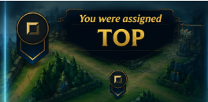

El top laner impacta principalmente en la parte superior del mapa. Su rol suele enfocarse en presión lateral, duelos 1v1 y control de objetivos como el Heraldo. En mid y late game, puede dividir al equipo enemigo haciendo splitpush o iniciar peleas importantes.
Top Lane
Farming
El macro de farming en toplane se basa en mantener una economía estable incluso en líneas difíciles. Un buen top laner sabe cuándo priorizar súbditos por encima de intercambios y cómo aprovechar ventanas para negar recursos al rival. También es importante controlar el tempo de la línea para poder farmear seguro sin perder demasiada vida, ya que un top débil en oro pierde mucha presión en side lane durante el mid game.
Control de oleadas
El control de oleadas en top es fundamental porque la línea es larga y castigadora. Saber congelar cerca de la torre permite denegar experiencia y dejar expuesto al rival a gankeos. También es clave entender cuándo slow pushear para preparar dives o generar una gran oleada que obligue al enemigo a responder mientras se rota hacia objetivos o peleas grupales.
Rotaciones y objetivos
En toplane, el enfoque principal suele estar en Heraldos y presión lateral para facilitar objetivos globales. El top laner debe identificar cuándo rotar para ayudar en Heraldo, cuándo mantener presión en una side lane y cuándo conservar teleport para peleas importantes. Muchas veces su función es obligar a que el enemigo responda la presión mientras el resto del equipo asegura dragones o visión.
Impacto en el mapa
El impacto del top laner depende mucho de cómo use su presión lateral y teleports. Un buen top no solo gana su línea, sino que también crea ventajas en otras zonas del mapa mediante rotaciones inteligentes, flanqueos y presión constante en side lanes. Incluso sin participar directamente en todas las peleas, puede generar espacio y obligar al rival a tomar malas decisiones.